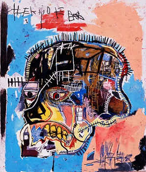

Untitled (Skull)
Jean-Michel Basquiat · 1981 · Acrylic and oilstick on canvas · The Broad, Los Angeles
In copyright. Small image shown under fair use, for reference and commentary.
Jean-Michel Basquiat finished most of his pictures within a few days, but this one sat unfinished for several months. It was shown as Untitled at his first American solo exhibition, at the Annina Nosei Gallery in 1982. The word Skull was added to the title when the painting was bought some months later, and it has stayed. Eli and Edythe Broad acquired it that year.